2001 年 1 月 2 日，兩艘金門的客輪「太武號」和「浯江號」，載著大約 180 位金門鄉親開到廈門，這是兩岸隔了五十多年後，第一次有客船直接往來。以前要去大陸，得先繞到香港或日本。到現在，坐小三通往來金廈的旅客已經超過兩千四百萬人次。

四晚都住這裡
壺香悅
中山路步行街店。紅白色的洋樓，門口是圓拱玻璃門，就在中山路步行街旁邊。
地址（給司機看）
壶香悦（厦门中山路步行街店）
厦门市思明区定安路61-2号
3
中山路步行街店。紅白色的洋樓，門口是圓拱玻璃門，就在中山路步行街旁邊。
12 月的廈門，白天大約 15 到 20 度，早晚 10 到 13 度左右，跟台北的冬天差不多。
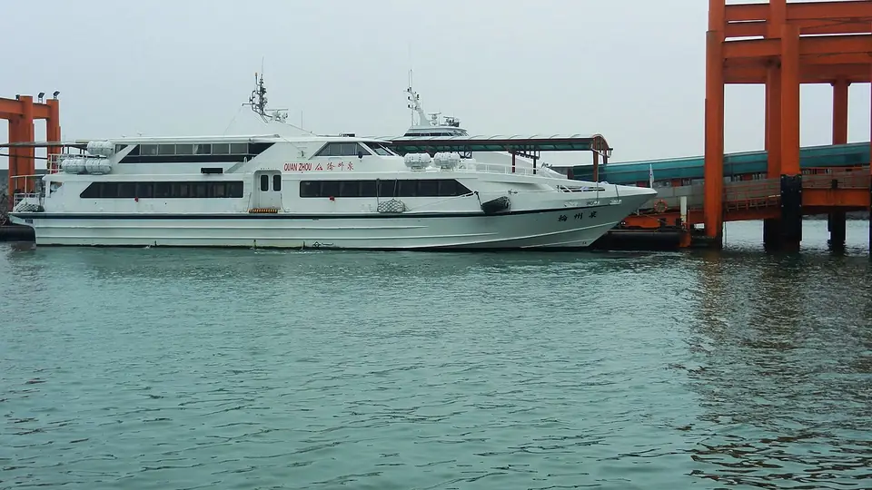
從金門水頭碼頭坐船到廈門五通碼頭，大約 30 分鐘。天氣好的時候，在船上就看得到廈門的高樓。
2001 年 1 月 2 日，兩艘金門的客輪「太武號」和「浯江號」，載著大約 180 位金門鄉親開到廈門，這是兩岸隔了五十多年後，第一次有客船直接往來。以前要去大陸，得先繞到香港或日本。到現在，坐小三通往來金廈的旅客已經超過兩千四百萬人次。
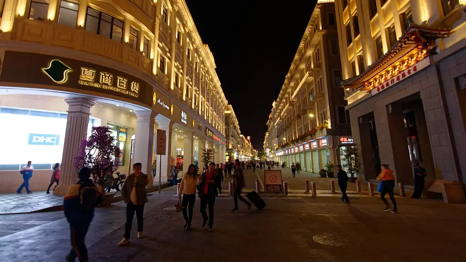
飯店就在旁邊。整條街是行人徒步區，兩邊是騎樓老房子，有很多小吃和伴手禮店，晚上燈亮起來特別漂亮。
中山路大約在 1925 年開始興建，全長約 1.2 公里，從海邊的輪渡碼頭一路往東。兩旁的騎樓，多半是 1920 年代從南洋回鄉的華僑蓋的，樓上住人、樓下開店，下雨天也淋不到雨，跟台灣的老街很像。現在被評為「中國歷史文化名街」。
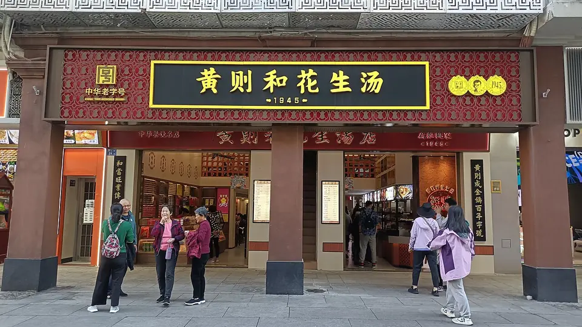
中山路上的老店，從 1945 年開到現在。花生湯是甜湯，花生煮到入口即化，也可以在附近吃廈門人早餐常吃的麵線糊。
八市就是「第八市場」，從飯店走路約 10 分鐘。早上海鮮剛送到，是一天最熱鬧的時候。可以看活海鮮、看在地人買菜，也可以買芒果乾當伴手禮，想吃什麼就買一點小吃。
聽老一輩的廈門人說，八市大約在 1920、30 年代就形成了。因為離輪渡碼頭近，漁船一靠岸，海鮮就直接送來賣，一直是廈門最新鮮的海鮮集散地。八市其實是兩個市場合起來的：裡面的營平市場和外面的開禾市場，兩旁也都是騎樓。
坐車約 15 分鐘。千年閩南古寺，香火很旺，可以進去拜拜。寺廟依山而建，一路往上走，可以看到廟宇建築和後面的五老峰山景。
南普陀寺始建於唐末五代，最早叫「泗洲院」，宋朝改稱「無盡岩」，明朝又叫「普照寺」。清朝康熙年間重修，加蓋了供奉觀音菩薩的大悲殿。浙江的普陀山是有名的觀音道場，這座寺在它的南邊，所以叫「南普陀」。
就在寺裡，是廈門很有名的素菜館。一樓是自助餐，樓上可以點菜。
這裡的素菜做得很講究，菜名也很雅緻，像「半月沉江」「南海金蓮」，光看名字就很有意思。

從飯店走路約 5 分鐘。請師傅用小工具清耳朵，躺著大約一個小時，很舒服，常常有人做到一半就睡著。不想做的人可以在附近逛逛。
採耳是很傳統的手藝，在四川最有名，現在很多城市都有。
在和平碼頭 4 樓，閩南古厝的裝潢，靠窗就正對鼓浪嶼。傍晚去剛好看夕陽，天黑後鼓浪嶼的燈一盞盞亮起來。招牌菜有紅蟳米糕、薑母鴨。
這個碼頭很有故事：2001 年第一班小三通的船，就是從金門開到這個和平碼頭靠岸。我們第一天坐的小三通，就是從那一天開始的。
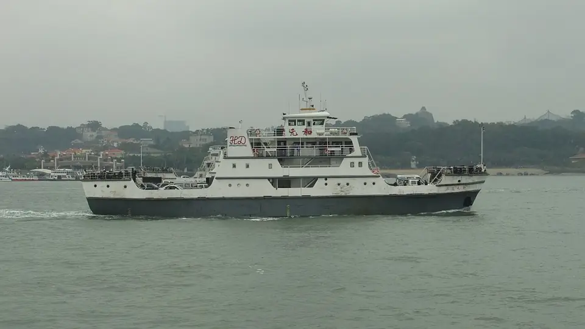
在國際郵輪中心裡面。每個人都要用自己的台胞證換上船的憑證，台胞證記得帶在身上。坐船到鼓浪嶼大約 15 分鐘。
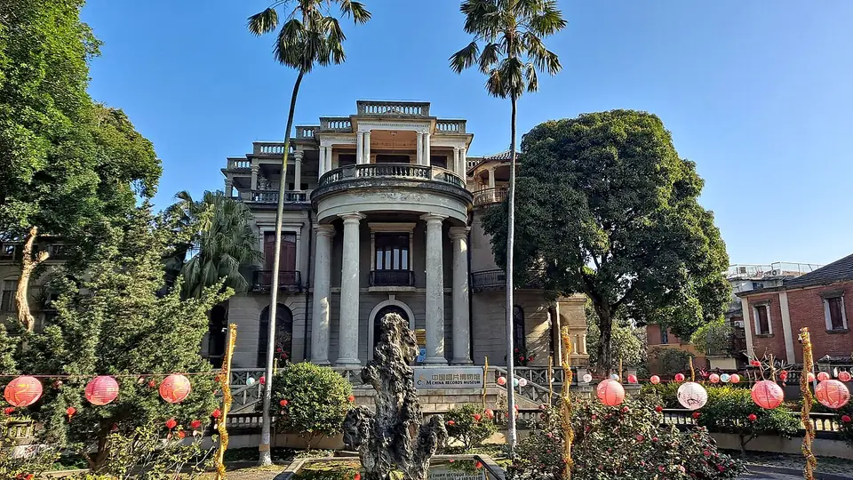
島上沒有汽車，到處是一百年前的老洋房、小巷和海邊步道。最適合散步，看建築、看海景，放慢腳步輕鬆逛。島上也有電瓶車可以坐。
島的西南邊海灘上，有一塊兩公尺多高、中間有洞的礁石，漲潮時海浪打進洞裡，聲音像打鼓一樣，叫做「鼓浪石」，島也在明朝時因此改名「鼓浪嶼」，在那之前叫「五龍嶼」。
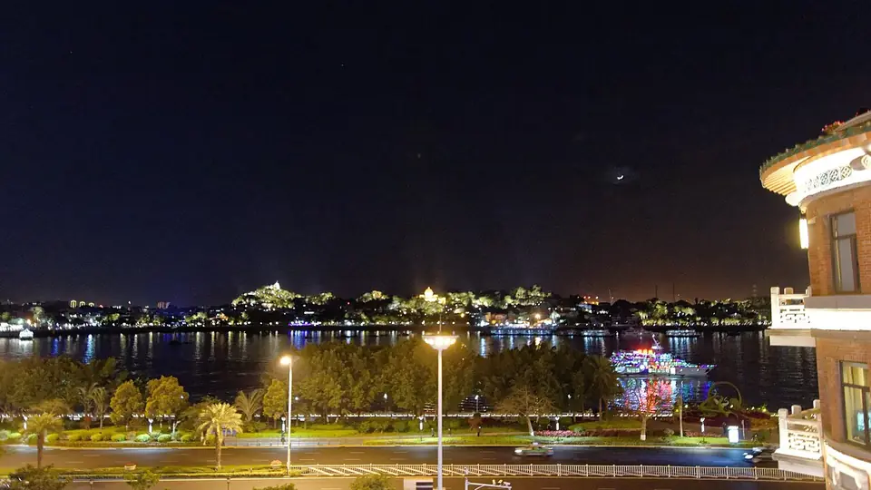
清朝末年，很多國家的領事館、商人和傳教士住進鼓浪嶼，蓋了各式各樣的洋樓、教堂和學校，所以有「萬國建築博覽」的稱號。島上的鋼琴也特別多，還有一座鋼琴博物館，被叫做「鋼琴之島」。2017 年，鼓浪嶼以「歷史國際社區」被列為世界文化遺產。

跟飯店在同一條路上，在 2 樓。做足療加全身按摩，大約 80 分鐘，躺在包廂裡還可以看電影。
按得太大力，就跟師傅說「輕一點」。有人推銷辦卡，就說「我們是遊客，不辦卡，謝謝」。
海景茶館，大窗戶正對鼓浪嶼，還有鋼琴演奏。一邊喝功夫茶，一邊看夕陽，廈門 12 月大約五點半天黑。
功夫茶是閩南人的日常：用小茶壺、小茶杯，一泡一泡慢慢喝。常喝的是烏龍茶，有名的鐵觀音就產在福建安溪。
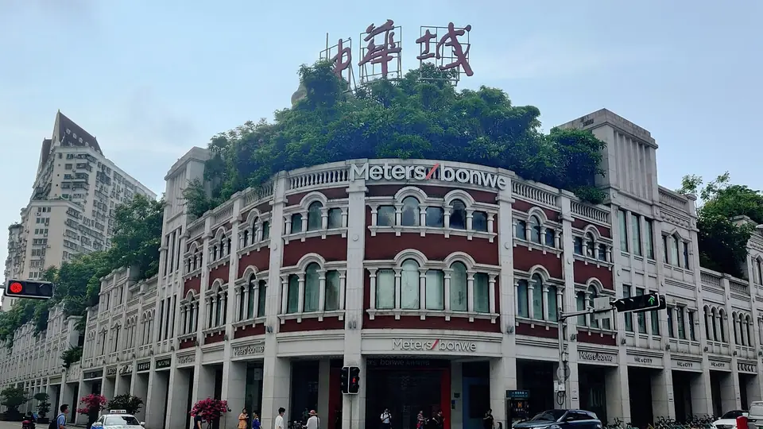
從茶館走過來約 10 分鐘，回飯店也很近。閩南風格的老街，有小吃和文創小店，看到想吃的就進去吃晚餐。
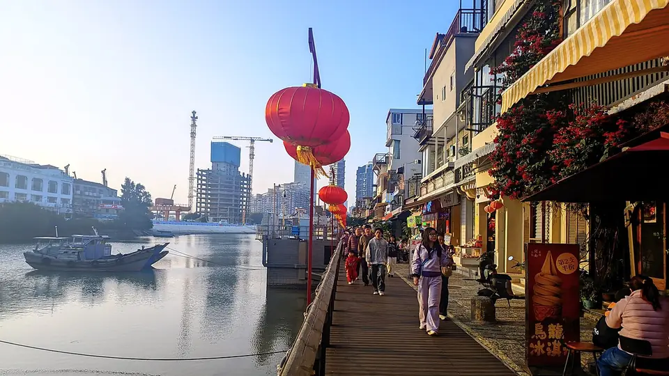
以前的老漁港，漁船還停在港邊，兩邊是彩色的老房子、咖啡店和文創小店。這裡是散步看風景的地方，看到喜歡的咖啡店就進去坐坐。
這一帶以前叫「玉沙坡」，是廈門最早的漁港。1920 年代廈門沿著海邊築堤蓋馬路，原本的小漁港被填掉，漁船就搬到沙坡尾，蓋了新的避風塢，颱風天可以躲進來。後來漁業慢慢沒落，老工廠、老倉庫改成藝術區和咖啡店，就是現在的「沙坡尾藝術西區」。
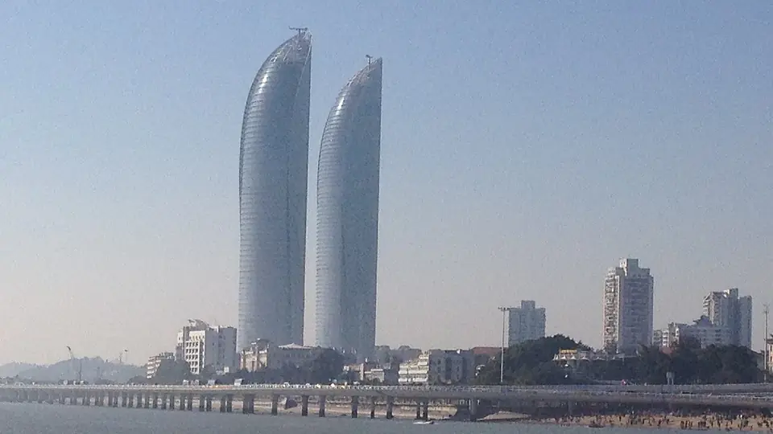
從沙坡尾走路約 5 分鐘。中午在 5 樓的一席吃海景午餐，窗外就是海和演武大橋。
世茂海峽大廈是兩棟像船帆的高樓，大約 300 公尺高，2015 年完工，大家都叫它「雙子塔」，是廈門很醒目的地標。
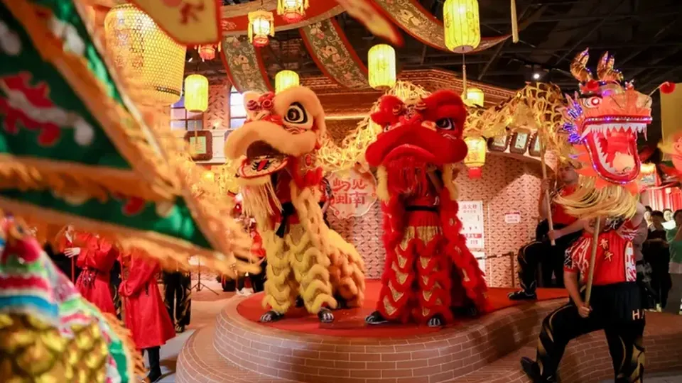
坐車約 30 分鐘。全部在室內，有冷氣，像走進一座閩南古城，表演一場接一場。
2025 年 5 月才開幕。裡面分成宋朝、海上絲路、市井煙火、南洋四個時空，每天有將近 30 場表演：大型實景演出《千年回響》、提線木偶、飛天表演，還有《鼓浪風雲》大戲。
表演全部都已經付過了。只有換古裝、做手工、買吃的，才要另外付錢。晚餐就在館內的小吃街吃。
提線木偶是泉州的傳統戲，一尊木偶身上有十幾條到三十幾條線，全靠師傅的手指操控，動作細膩得像真人一樣。
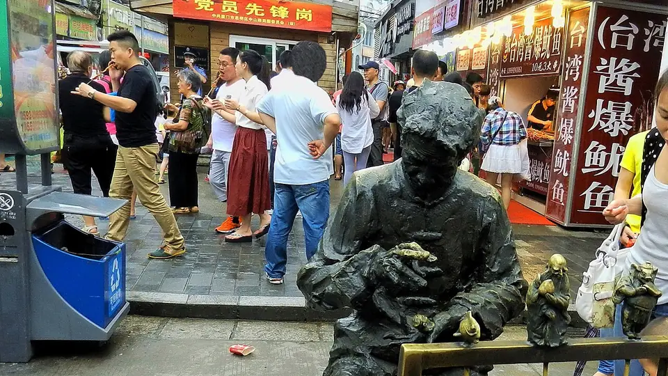
回飯店前，在中山路買最後的伴手禮。隔天要早起坐船，晚上先把行李收好。
肉乾、香腸這些肉做的東西不能帶回台灣。小三通的行李重量有限制，伴手禮不要買太重。
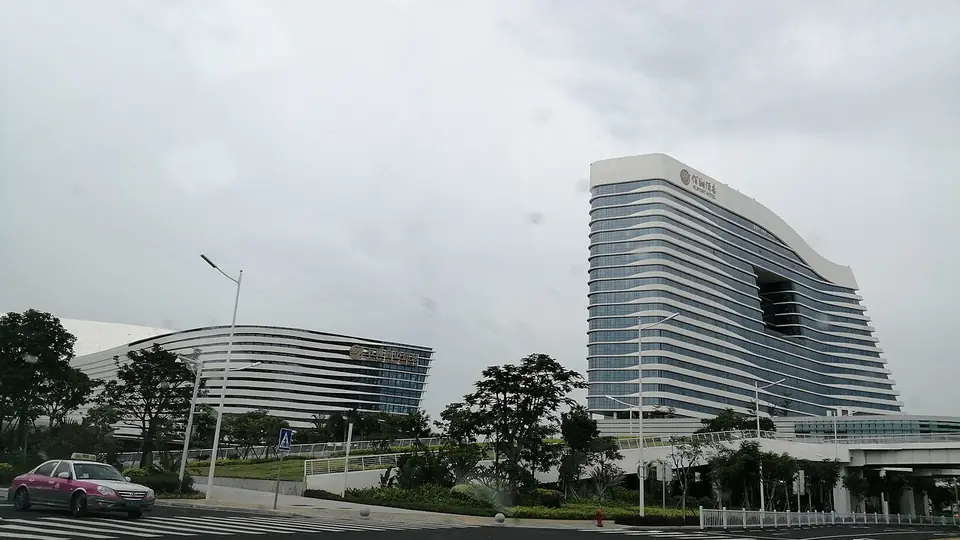
退房後坐車約 40 分鐘到五通碼頭，辦報到、出境，坐船約 30 分鐘回到金門水頭碼頭（船班時間以領隊通知為準）。
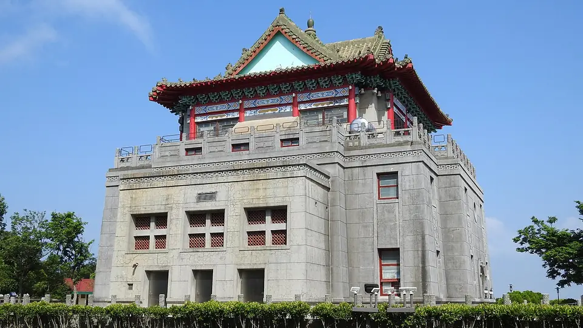
在水頭碼頭坐上包車，行李放車上，由司機帶路逛金門。照片是金門的地標莒光樓，1952 年建成。
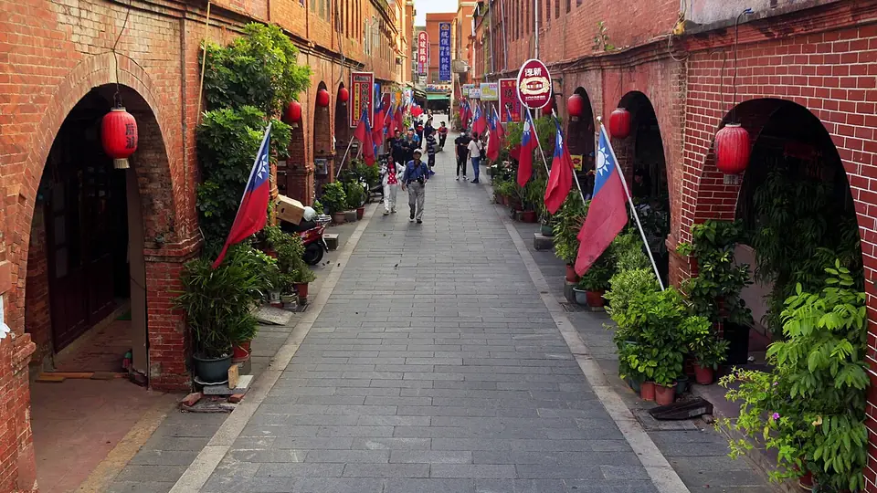
中午在金城的模範街吃午餐、買貢糖。
整條街是紅磚拱廊的老店屋，1924 年開始興建、1925 年完成，由當時的商會會長傅錫琪發起。他希望這條街成為以後建設的「模範」，所以叫模範街。
金門貢糖是用花生和麥芽糖做的，口感酥鬆。其實貢糖最早來自廈門，後來在金門發揚光大；1959 年在全國商品展得到最優等，從此成為金門最有名的伴手禮。這趟從廈門玩到金門，剛好把貢糖的故事走了一圈。
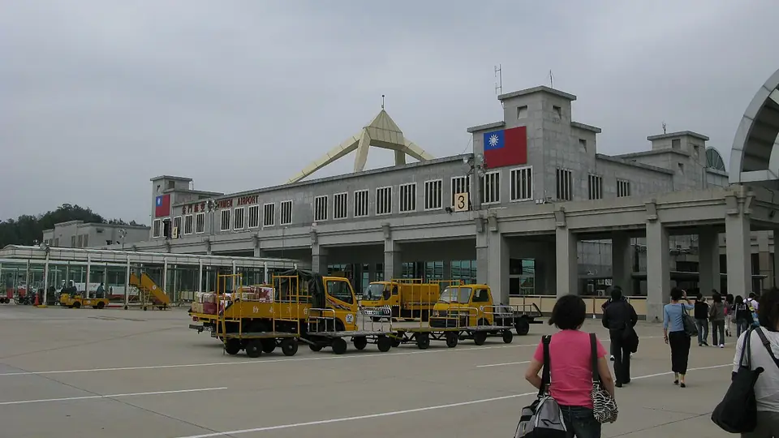
15:45 到金門機場報到，17:40 起飛，回到台北松山機場。旅途愉快，辛苦了！
十道廈門的道地味道，看到就點來吃吃看。
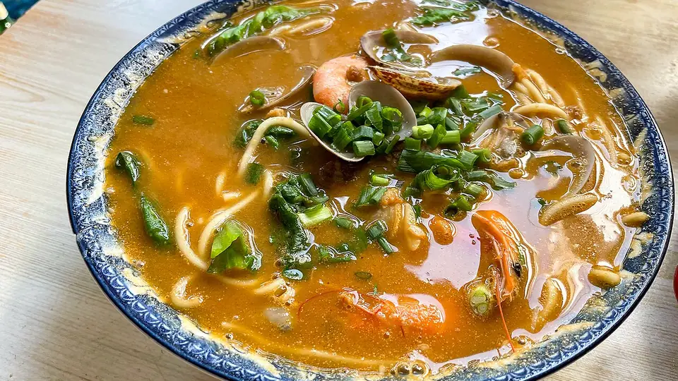
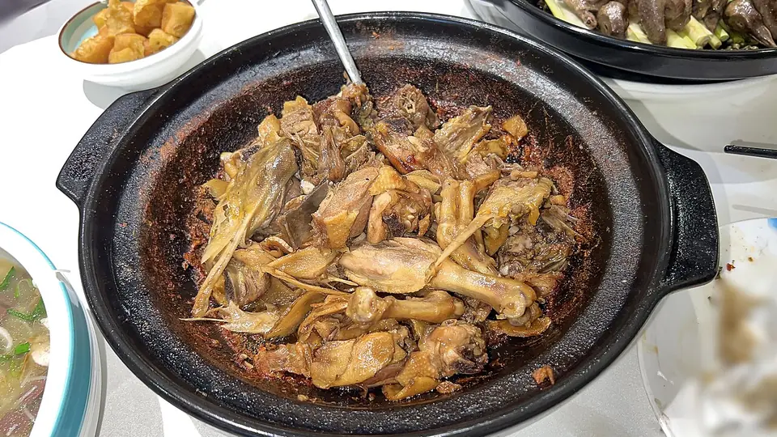
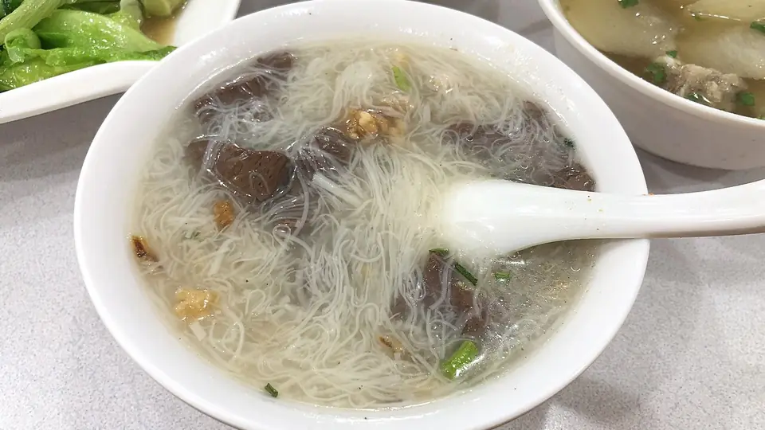
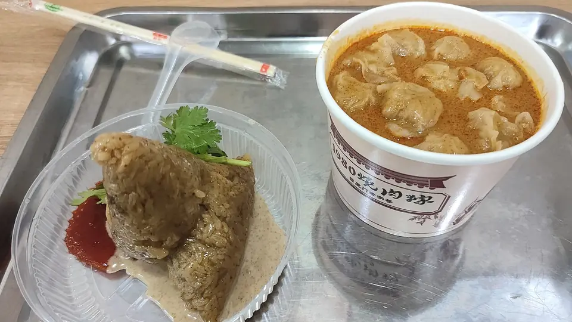
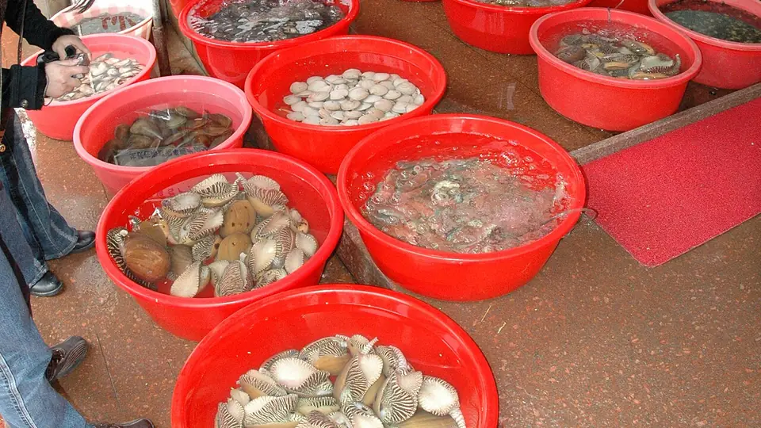
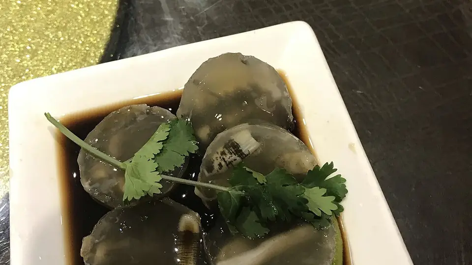
| 計程車 | → | 出租車・打車 |
| 捷運 | → | 地鐵 |
| 廁所 | → | 衛生間 |
| 塑膠袋 | → | 塑料袋 |
| 冷氣 | → | 空調 |
| 鳳梨 | → | 菠蘿 |
| 番茄 | → | 西紅柿 |
| 馬鈴薯 | → | 土豆 |
| 影片 | → | 視頻 |
廈門人也講閩南話，跟台語很像，可以說說看！
要坐車時，翻到要去的地方，把這頁給司機看。
请送我到这里，谢谢
南普陀寺
厦门市思明区思明南路515号
请送我到这里，谢谢
小埕戏·流水席福建菜
厦门市思明区鹭江道3号 和平码头（1号电梯到4楼）
请送我到这里，谢谢
国际邮轮中心 厦鼓码头
厦门市湖里区东港路2号 国际邮轮中心（厦鼓码头）
请送我到这里，谢谢
沙坡尾
厦门市思明区大学路 沙坡尾
请送我到这里，谢谢
一席海景大排档·观落日海景（双子塔店）
厦门市思明区演武西路180号 世茂海峡大厦（双子塔）5楼
请送我到这里，谢谢
屿见闽南·时光幻境
厦门市湖里区东港北路15-19号 海上世界4-5楼
请送我到这里，谢谢
五通客运码头
厦门市湖里区环岛东路 五通客运码头
请送我到这里，谢谢
壶香悦（厦门中山路步行街店）
厦门市思明区定安路61-2号